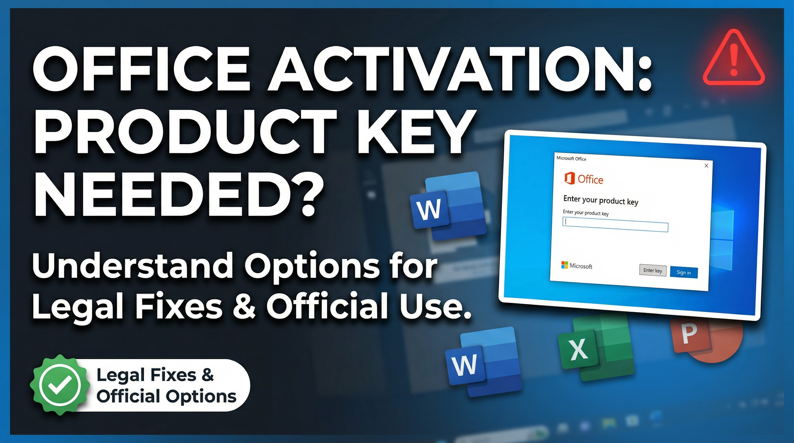

National Election 2024: Live Coverage
Anchored the live election-night broadcast with real-time result analysis and expert panel discussion.
January 2024Every story deserves a voice that commands trust. With over a decade of live broadcasting, breaking news anchoring, and high-stakes interview moderation, I bring accuracy, composure, and editorial intelligence to every on-camera moment.
I am a news presenter and broadcast journalist with over a decade of live television experience. My career has been built on the belief that responsible journalism, delivered with clarity and composure, is one of the most powerful forces in public life.
From anchoring breaking national news to moderating high-stakes political interviews and coordinating live coverage of international events, I have cultivated a reputation for calm authority under pressure. My editorial instincts are sharp, my delivery is precise, and my commitment to accuracy is unwavering.
"Journalism is not just about reporting events. It is about shaping how a nation understands itself at its most defining moments."
My on-camera presence is defined by strong voice modulation, natural teleprompter fluency, and the ability to adapt in real time when stories evolve live. Whether covering a breaking event in the field, anchoring from the studio, or moderating a panel discussion, I bring the same level of preparation, professionalism, and audience awareness to every broadcast.
A curated selection of programs, special coverage, and broadcast assignments. All videos play directly within this page.
Anchored the live election-night broadcast with real-time result analysis and expert panel discussion.
January 2024Moderated the live broadcast of the Prime Minister's national address on economic policy and infrastructure development.
March 2023Full-day live coverage of the national budget presentation with expert economist commentary and real-time analysis.
June 2023Anchored live desk coverage of Bangladesh's participation at the United Nations General Assembly, 78th session.
September 2023Special desk coverage of the COP28 climate conference, covering bilateral meetings and key policy outcomes for South Asia.
December 2023On-ground field coverage of the Rohingya humanitarian situation at Cox's Bazar refugee camps, with UNHCR coordination.
November 2022Hosted the live studio show for Bangladesh's ICC Cricket World Cup campaign including pre-match briefings and post-match analysis.
October – November 2023Anchored the National Sports Day programme covering athletes, achievements, and sporting milestones across disciplines.
April 2023Hosted the live red carpet and awards ceremony with exclusive celebrity interviews and behind-the-scenes access.
October 2023Live coverage of Pohela Boishakh celebrations featuring cultural performances, community events, and heritage stories.
April 2023Official anchor for the National Corporate Excellence Summit, moderating panel sessions and VIP keynote addresses.
February 2024Hosted a live broadcast series on national health awareness in partnership with the Ministry of Health and WHO Bangladesh.
August 2022A chronological record of broadcast roles, programs, and key responsibilities across networks.
Lead news presenter for primetime evening bulletins, responsible for anchoring live national and international coverage. Regularly moderates special-event broadcasts including state functions, elections, and breaking crisis situations.
Presented daily news bulletins and hosted a weekly interview programme featuring prominent public figures, academics, and industry leaders. Managed live studio broadcasts during significant national events and cultural milestones.
Assigned to special and field coverage including political summits, natural disasters, and major public events. Developed expertise in live unscripted broadcasting under high-pressure conditions.
Began broadcast career as a junior presenter, working across multiple programming shifts and gaining foundational experience in studio production, newsroom operations, and audience communication.
Core competencies developed through years of live television, newsroom operations, and public communication.
Honours, recognitions, and awards received from media organisations, industry bodies, and national institutions.

2024Recognised for outstanding contribution to national broadcast journalism and on-screen excellence during primetime coverage.
 2023
2023
Awarded for exceptional performance during the live national election coverage broadcast, commended for composure and editorial clarity.
 2022
2022
Special recognition for responsible and accurate field coverage during the 2022 national crisis situation, delivered under extreme pressure.
 2021
2021
Awarded the Media Communication Excellence Certificate for demonstrated leadership in public communication and broadcast journalism.
Recognised as Outstanding Programme Host for the flagship weekly current affairs interview programme, commended for depth and guest engagement.
2019
Honoured by the Press Institute for demonstrated leadership in public communication and for promoting responsible broadcast journalism practices.
Industry training programmes, workshops, and professional development certifications from leading global media institutions.

Intensive programme covering digital newsroom leadership, editorial standards in live broadcasting, and audience-first journalism methodology.

Professional workshop focused on voice technique, delivery rhythm, and on-camera presentation skills specifically for broadcast journalism professionals.

Comprehensive training on responsible journalism ethics, editorial independence, fact-checking standards, and legal frameworks in broadcast media.

Intensive crisis communication and live reporting workshop by Deutsche Welle journalists covering conflict, disaster, and emergency news environments.
Professional certification in advanced interview structuring, public communication strategy, and broadcast engagement techniques for senior journalists.
Training on integrating digital and social media practices into broadcast newsroom workflows, covering platform-native storytelling and audience engagement.
Studio moments, field coverage, interviews, and event anchoring — captured on and off camera.
Available for news presentation, live event anchoring, corporate communication, and media collaborations.